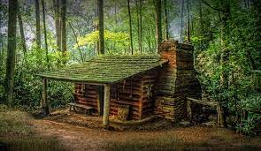

| live in forest | live in city |
|---|---|
| How healthy or hard life is in the forest depends on the individual case. Frugal hermits sometimes manage without the benefits of civilisation at all. Others are resourceful, fiddle around with their own wind and solar energy supply and even have a telephone connection. It's all a question of attitude. Those who live (over)in the forest for decades are usually quite healthy. After all, everyday life often entails a lot of strenuous physical work, as well as a lot of consumerism. This can even be good for you, especially when it comes to food. And here we can state: only the hardy get into the garden, or the forest. Those who do not adapt well to the way of life of their ancestors and take care of themselves will either give in quickly or even fall seriously ill. Because outdoor life is not a bed of roses, nor is it a romantic commune. The way of life and daily routine of modern forest dwellers is very different. Some of them go or went about a normal activity. The cultivation of fruits and vegetables for daily use alone takes up a lot of time, as does the collection of wood for personal use in many cases.  |
City living can have many positive impacts compared to rural life. Because of these benefits, most of the worlds population live in cities now. While the rural lifestyle is less stressful, city lifestyle has a lot of people and many advantages for people. With a rapid increase in urban growth, cities are becoming lucrative. It is more likely people will walk in parks or get more exercise in city life than to their rural counterparts. Living in the city is becoming a new normal and people now prefer living in major cities inspite of higher cost of living. There are some negatives to city life, such as stressful lifestyles and fast-paced life. These have to be tolerated to live in a good city. Obesity is also high in urban areas because of loss of exercise. In rural areas, people do a lot of manual work which helps maintain their stress and obesity levels. People might also know each other more personally in rural areas as compared to cities. Although it is important to think of both sides, this article will focus on the advantages of living in the city rather than in rural areas or the countryside. |